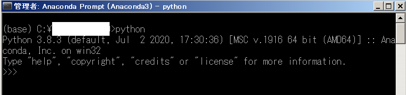
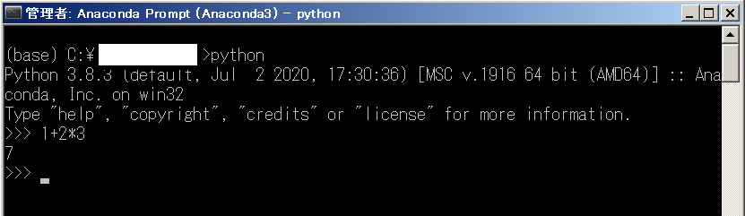
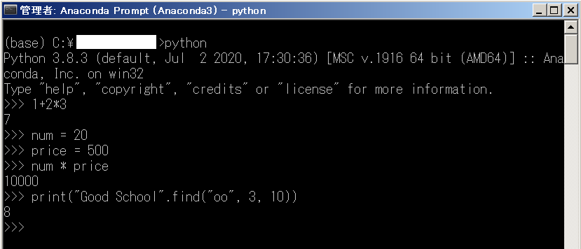
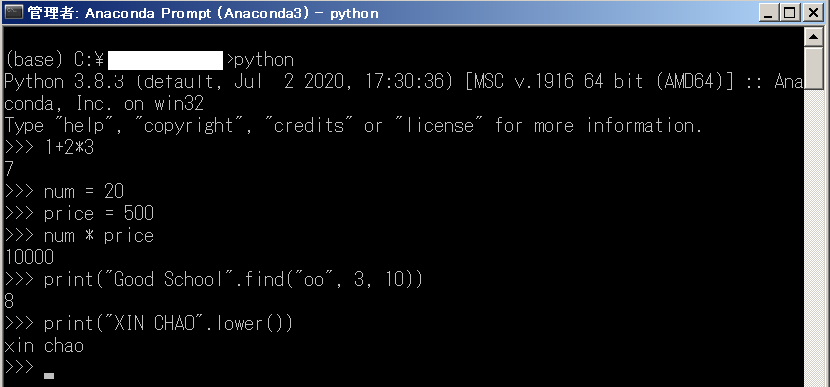
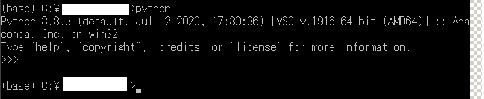
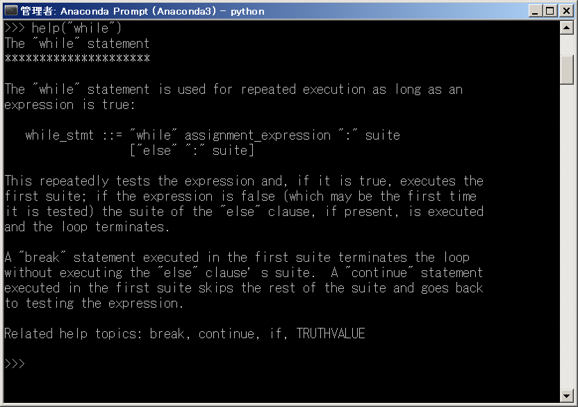
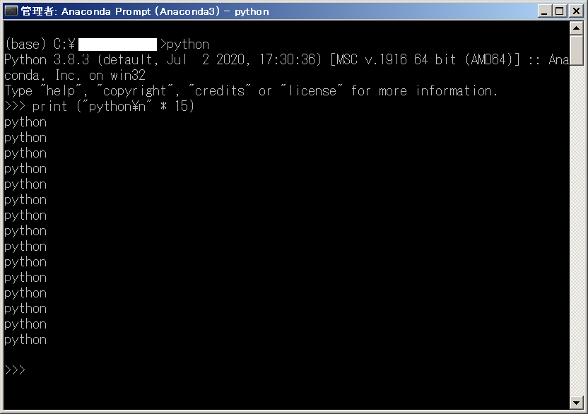
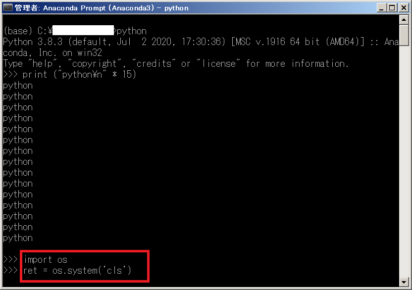
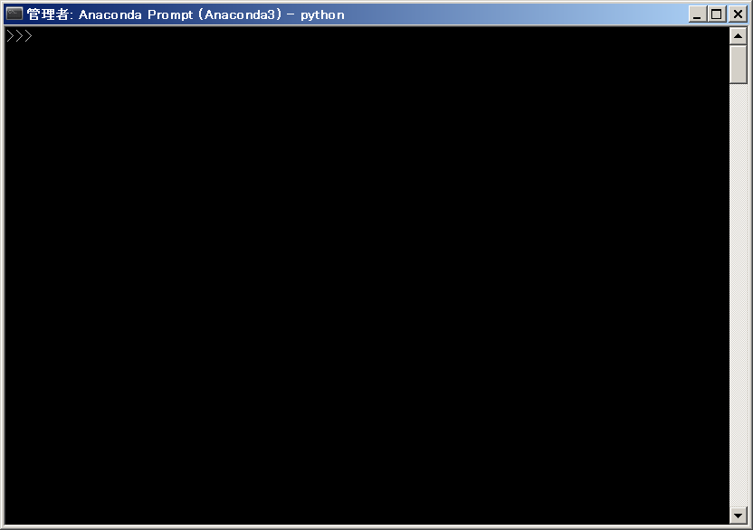

Instructions for using interactive mode in python. You will learn the fastest way to run python code using interactive mode, as well as interactive mode operations such as starting interactive mode , ending interactive mode, or clearing the screen in Python later. this lesson.
In python there is a mode called interactive mode that allows us to quickly execute an input command and immediately bring the result to the screen without having to save the program file.
Start interactive mode in python
In the Windows environment, we start interactive mode by opening the Command Prompt (if you have installed the python environment ) or Anaconda Prompt (if you have installed python with Anaconda ), then enter the following command line Directly to the screen and press the key ENTER to run it.
python |
Then the screen below will appear, and you can start using interactive mode in python .

Try entering a few lines of code and interacting with python right on this screen.
Python interactive mode calculation example
Enter the following command line screen and press ENTER to run it:
1+2*3 |
Immediately, the calculation results are returned:

Next try to assign the value to the variable and compute with it. Enter in turn and press ENTER to the following lines of code:
num = 20 |
The results of the calculation with the variables will be displayed immediately:
Example of manipulating strings in python interactive mode
Let’s try and see what it would be like to manipulate strings using interactive mode in python .
Example find character position in python string
print("Good School".find("oo", 3, 10)) |
Result:

Example Convert uppercase to lowercase in python
print("Good School".find("oo", 3, 10)) |
Result

Not only with simple examples like calculating or printing to the screen as above, you can also use interactive mode in python with complex processing such as commands IF, commands, WHILE etc.
End interactive mode in python
To end interactive mode in python , press a key combination Ctrl + Z in Windows. Then the interactive mode in python will end as shown in the following screen:

See help guide in python interactive mode
You can see tutorials on how to use python directly in python interactive mode. For example you want to know how to use the command WHILE in python, type the line of code into the screen and press ENTER as below:
help ( ‘while’ )
help('while') |

An English instruction manual WHILEhas appeared. If you know English, this will be a very useful function for you. However, if you do not understand English, then it is best to learn python right at this website laptrinhcanban.com in Vietnamese mode.
Clear screen in python
In interactive mode python is not available code to clear the screen, so you only have 2 ways that is to disable Command Prompt (if you have installed the python environment ) or Anaconda Prompt (if you have installed python with Anaconda ) and restart python interactive mode , or you have to enter two lines of code like below:
Clear the screen in python in interactive mode in Windows
import os |
For example we have a screen in full python interactive mode as follows:

To clear the screen, we will enter in turn and press ENTER two lines of code above:

And the screen result will be deleted and returned as follows:

Clear the screen in python at interactive mode on Mac or Linux
The way to clear the screen in python interactive mode on Mac or Linux is similar to Windows, however we need to use the following two lines of command instead:
import os |
Summary
Above, Kiyoshi showed you how to use interactive mode in python . Start interactive now in python and practice with today’s examples again.
And let’s learn more about Python in the next lessons.
HOME>> python for beginners>>basic knowledge of python programming